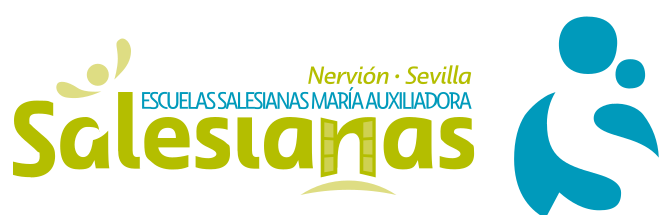

Tareas pendientes de cada campaña o actividad, con enlaces y documentos. Solo lo ve el equipo de Pastoral.
Cargando…
Entra con tu cuenta del colegio (Microsoft 365).
Has entrado como , que no está en el grupo «Pastoral» de Microsoft 365.
Si crees que deberías entrar, pídeselo a la coordinación de Pastoral o escribe a web@nervion.salesianas.org.